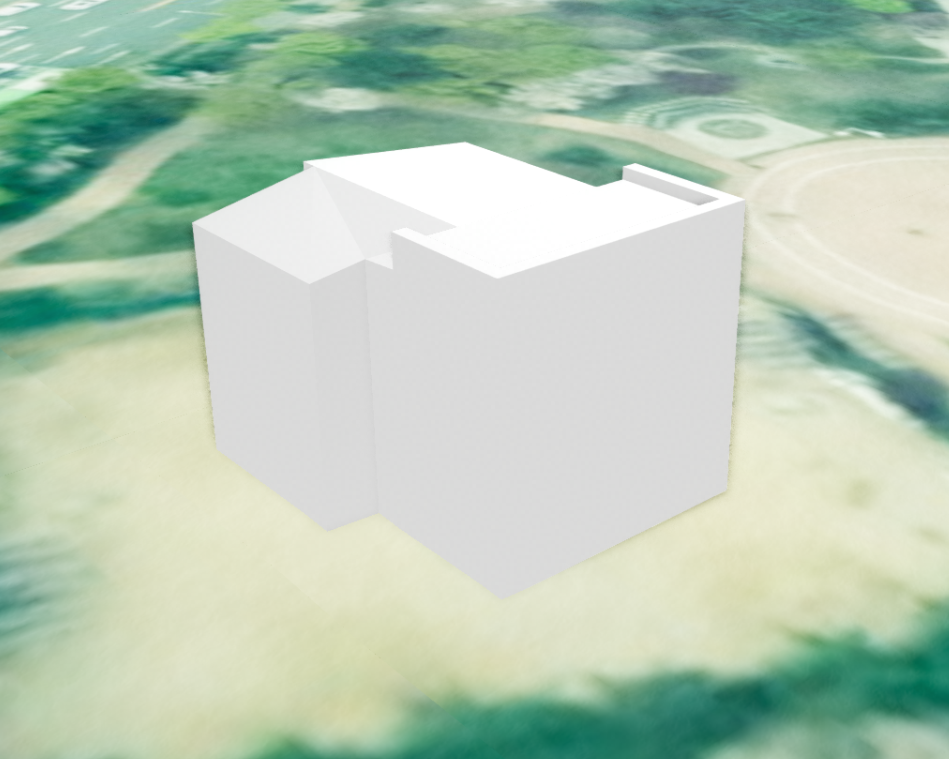
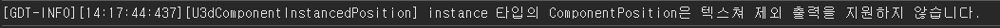

컴포넌트 스타일 설정하기
목차
U3dComponentPosition과 U3dComponentInstancedPosition의 스타일 API를 사용하면 컴포넌트의 색상과 투명도를 변경할 수 있습니다. 텍스처 출력 설정은 일반 방식으로 생성된 U3dComponentPosition에서만 지원합니다.
컴포넌트의 개념과 일반·인스턴스 방식의 차이는 용어 설명 - 컴포넌트와 용어 설명 - 인스턴스 컴포넌트를 참고하세요.
1. 색상 변경
setColor()를 사용하면 컴포넌트에 적용된 재질의 색상을 변경할 수 있습니다. CSS 색상 문자열, 16진수 또는 THREE.Color 객체 등 Three.js에서 지원하는 색상 표현을 사용할 수 있습니다.
색상 설정과 조회는 일반 방식과 인스턴스 방식에서 모두 사용할 수 있습니다.
API
U3dComponentPosition.setColor(color) : 컴포넌트의 색상을 설정하는 함수
매개변수
color(ColorRepresentation) : 설정할 색상. 기본값:'#ffffff'
반환값
return(boolean) : 색상 적용 성공 여부
1. 색상 설정
const component = componentLayer.getComponentByName('건물1');
if (!component) {
throw new Error('컴포넌트를 찾을 수 없습니다.');
}
const result = component.setColor('#ff0000');
if (result) {
console.log('색상 변경 성공');
} else {
console.log('색상 변경 실패');
}
다음과 같이 다른 형식의 색상값도 사용할 수 있습니다.
component.setColor('rgb(255, 0, 0)');
component.setColor(0xff0000);
2. 현재 색상 조회
API
U3dComponentPosition.getColor() : 컴포넌트에 현재 적용된 색상을 반환하는 함수
반환값
return(ColorRepresentation) : 현재 적용된 색상. 색상을 확인할 수 없으면 빈 문자열
const color = component.getColor();
console.log(color);
3. 색상 변경 결과
2. 투명도 변경
setOpacity()를 사용하면 컴포넌트의 투명도를 변경할 수 있습니다. 투명도는 불투명한 1부터 완전히 투명한 0 사이의 숫자로 설정합니다.
투명도 설정과 조회는 일반 방식과 인스턴스 방식에서 모두 사용할 수 있습니다.
API
U3dComponentPosition.setOpacity(opacity) : 컴포넌트의 투명도를 설정하는 함수
매개변수
opacity(number) : 설정할 투명도.0은 완전 투명,1은 완전 불투명. 기본값:1
반환값
return(boolean) : 투명도 적용 성공 여부
1. 투명도 설정
const component = componentLayer.getComponentByName('건물1');
if (!component) {
throw new Error('컴포넌트를 찾을 수 없습니다.');
}
const result = component.setOpacity(0.5);
if (result) {
console.log('투명도 변경 성공');
} else {
console.log('투명도 변경 실패');
}
2. 현재 투명도 조회
API
U3dComponentPosition.getOpacity() : 컴포넌트에 현재 적용된 투명도를 반환하는 함수
반환값
return(number) : 현재 투명도. 값을 확인할 수 없으면NaN
const opacity = component.getOpacity();
console.log(opacity);
3. 투명도 변경 결과
3. 텍스처 출력 설정
exceptTexture()를 사용하면 일반 방식으로 생성된 컴포넌트의 텍스처 출력을 끄거나 다시 켤 수 있습니다.
API
U3dComponentPosition.exceptTexture(isExcept) : 컴포넌트의 텍스처 출력 여부를 설정하는 함수
매개변수
isExcept(boolean) :true이면 텍스처를 출력하지 않고,false이면 텍스처를 출력합니다. 기본값:false
반환값
return(boolean) : 텍스처 출력 설정 성공 여부
1. 텍스처 출력 제외
const component = componentLayer.getComponentByName('건물1');
if (!component) {
throw new Error('컴포넌트를 찾을 수 없습니다.');
}
const result = component.exceptTexture(true);
if (result) {
console.log('텍스처 출력 설정 성공');
} else {
console.log('텍스처 출력 설정 실패');
}
텍스처를 다시 출력하려면 false를 전달합니다.
component.exceptTexture(false);

2. 인스턴스 방식 사용 시 주의사항
인스턴스 방식으로 생성된 U3dComponentInstancedPosition은 텍스처 출력 제외 기능을 지원하지 않습니다. exceptTexture(true)를 호출하면 지원하지 않는 기능이라는 안내 로그가 출력되고 false를 반환합니다.
isInstanced()를 사용하면 레이어에서 이후 생성할 컴포넌트의 기본 생성 방식이 인스턴스 방식인지 확인할 수 있습니다. 이미 생성된 특정 컴포넌트의 생성 방식을 반환하는 함수는 아닙니다.
API
U3dMultipleComponentLayer.isInstanced() : 레이어의 현재 기본 생성 방식이 인스턴스 방식인지 확인하는 함수
반환값
return(boolean) : 이후 생성할 컴포넌트가 인스턴스 방식이면true, 일반 방식이면false
if (componentLayer.isInstanced()) {
console.log('새 컴포넌트를 인스턴스 방식으로 생성합니다.');
} else {
console.log('새 컴포넌트를 일반 방식으로 생성합니다.');
}
텍스처 출력 여부를 제어해야 한다면 컴포넌트를 생성하기 전에 레이어의 setInstanced 옵션을 false로 지정하거나 setInstanced(false)를 호출하여 일반 생성 방식을 사용합니다.
componentLayer.setInstanced(false);
// 이후 addPosition()으로 생성하는 컴포넌트는 일반 방식으로 생성됩니다.
setInstanced()는 이후 생성할 컴포넌트의 방식을 설정하며, 이미 생성된 컴포넌트의 방식을 변환하지 않습니다.
